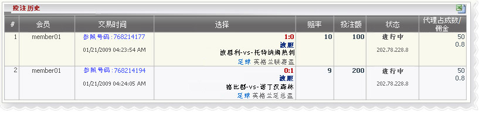

波胆
定义:
查看代理赢输根据占成注单投注种类之波胆．这份报告是由每个交易分开，包含所有该交易的详细资料．

波胆
- 在上面的数字:
- 第一注单: 会员帐号 "member01", 参考号码: 768214177,
交易日期: 01/21/2009, 投注种类: 波胆,比分: 1-0, 赛事: 波恩利 -vs-托特纳姆热刺，联赛: 英格兰联赛盃，赔率 = 10, 金额 = 100, 代理占成= 50%
- 第二注单: 会员帐号 "member01", 参考号码: 768214194,
交易日期: 01/21/2009, 投注种类：波胆,比分: 0-1, 赛事: 打比郡 -vs- 诺丁汉森林，联赛: 英格兰联赛盃，赔率 = 9, 金额 = 200, 代理占成 = 50%